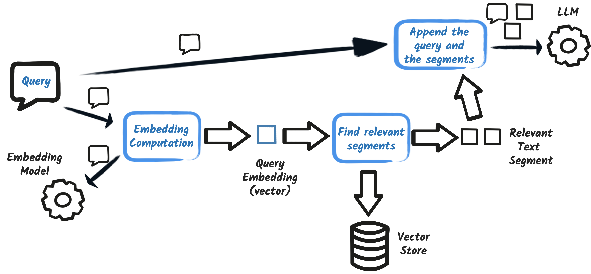
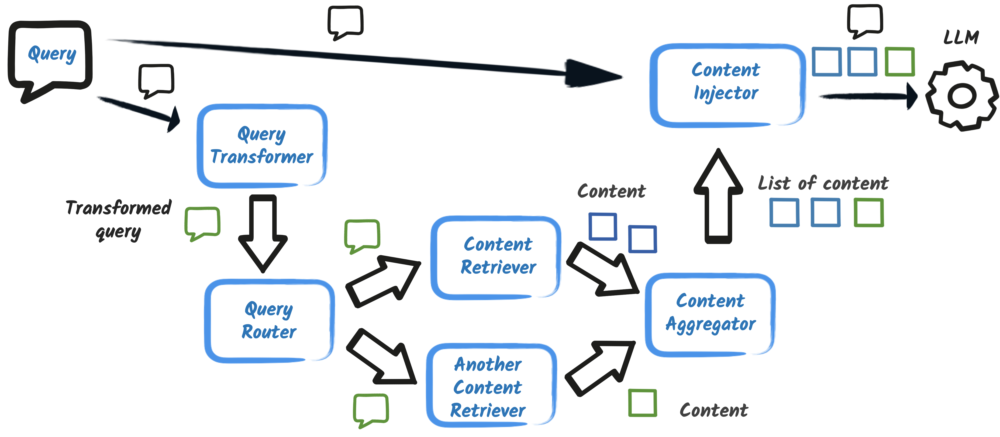

Step 06 - Deconstructing the RAG pattern
In the previous step, we implemented a RAG (Retrieval Augmented Generation) pattern in our AI service using EasyRag. Most of the complexity was hidden by EasyRag.
In this step, we will deconstruct the RAG pattern to understand how it works under the hood. We will see how we can customize it and use our own knowledge base and embedding model.
If you want to see the final result of this step, you can check out the step-06 directory.
Otherwise, let’s get started!
A bit of cleanup
Let’s start with a bit of cleanup.
First, open the src/main/resources/application.properties file and remove the following configuration:
quarkus.langchain4j.easy-rag.path=src/main/resources/rag
quarkus.langchain4j.easy-rag.max-segment-size=100
quarkus.langchain4j.easy-rag.max-overlap-size=25
quarkus.langchain4j.easy-rag.max-results=3
Then, open the pom.xml file and remove the following dependency:
<dependency>
<groupId>io.quarkiverse.langchain4j</groupId>
<artifactId>quarkus-langchain4j-easy-rag</artifactId>
<version>${quarkus-langchain4j.version}</version>
</dependency>
Tip
You could also open another terminal and run
Embedding model
One of the core components of the RAG pattern is the embedding model. The embedding model is used to transform the text into numerical vectors. These vectors are used to compare the text and find the most relevant segments.
Selecting a good embedding model is crucial. In the previous step, we used the default embedding model provided by OpenAI. You can however use your own embedding model as well.
In this step, we will use the bge-small-en-q embedding model.
Add the following dependency to your pom.xml file:
<dependency>
<groupId>dev.langchain4j</groupId>
<artifactId>langchain4j-embeddings-bge-small-en-q</artifactId>
<version>0.35.0</version>
</dependency>
Tip
You could also open another terminal and run
This dependency provides the bge-small-en-q embedding model.
It will run locally, on your machine.
Thus, you do not have to send your document to a remote service to compute the embeddings.
This embedding model generates vectors of size 384. It’s a small model, but it’s enough for our use case.
To use the model, we will use the dev.langchain4j.model.embedding.onnx.bgesmallenq.BgeSmallEnQuantizedEmbeddingModel CDI bean automatically created by Quarkus by adding the following to src/main/resources/application.properties:
quarkus.langchain4j.embedding-model.provider=dev.langchain4j.model.embedding.onnx.bgesmallenq.BgeSmallEnQuantizedEmbeddingModel
Vector store
Now that we have our embedding model, we need to store the embeddings. In the previous step, we used an in memory store. Now we will use a persistent store to keep the embeddings between restarts.
There are many options to store the embeddings, like Redis, Infinispan, specialized databases (like Chroma), etc. Here, we will use the PostgreSQL pgVector store, a popular relational database.
Add the following dependency to your pom.xml file:
<dependency>
<groupId>io.quarkiverse.langchain4j</groupId>
<artifactId>quarkus-langchain4j-pgvector</artifactId>
<version>${quarkus-langchain4j.version}</version>
</dependency>
Tip
You could also open another terminal and run
This embedding store (like many others) needs to know the size of the embeddings that will be stored in advance.
Open the src/main/resources/application.properties file and add the following configuration:
The value is the size of the vectors generated by the bge-small-en-q embedding model.
Now we will be able to use the io.quarkiverse.langchain4j.pgvector.PgVectorEmbeddingStore bean to store and retrieve the embeddings.
Ingesting documents into the vector store
While you are editing the src/main/resources/application.properties file, add the following configuration:
This is a custom config property that we will use to specify the location of the documents that will be ingested into the vector store.
It replaces the quarkus.langchain4j.easy-rag.path property from the previous step.
Now let’s create our ingestor. Remember that the role of the ingestor is to read the documents and store their embeddings in the vector store.

Create the dev.langchain4j.quarkus.workshop.RagIngestion class with the following content:
package dev.langchain4j.quarkus.workshop;
import static dev.langchain4j.data.document.splitter.DocumentSplitters.recursive;
import java.nio.file.Path;
import java.util.List;
import jakarta.enterprise.context.ApplicationScoped;
import jakarta.enterprise.event.Observes;
import org.eclipse.microprofile.config.inject.ConfigProperty;
import io.quarkus.logging.Log;
import io.quarkus.runtime.StartupEvent;
import dev.langchain4j.data.document.Document;
import dev.langchain4j.data.document.loader.FileSystemDocumentLoader;
import dev.langchain4j.model.embedding.EmbeddingModel;
import dev.langchain4j.store.embedding.EmbeddingStore;
import dev.langchain4j.store.embedding.EmbeddingStoreIngestor;
@ApplicationScoped
public class RagIngestion {
/**
* Ingests the documents from the given location into the embedding store.
*
* @param ev the startup event to trigger the ingestion when the application starts
* @param store the embedding store the embedding store (PostGreSQL in our case)
* @param embeddingModel the embedding model to use for the embedding (BGE-Small-EN-Quantized in our case)
* @param documents the location of the documents to ingest
*/
public void ingest(@Observes StartupEvent ev,
EmbeddingStore store, EmbeddingModel embeddingModel,
@ConfigProperty(name = "rag.location") Path documents) {
store.removeAll(); // cleanup the store to start fresh (just for demo purposes)
List<Document> list = FileSystemDocumentLoader.loadDocumentsRecursively(documents);
EmbeddingStoreIngestor ingestor = EmbeddingStoreIngestor.builder()
.embeddingStore(store)
.embeddingModel(embeddingModel)
.documentSplitter(recursive(100, 25))
.build();
ingestor.ingest(list);
Log.info("Documents ingested successfully");
}
}
This class ingests the documents from the rag.location location into the vector store.
It runs when the application starts (thanks to the @Observes StartupEvent ev parameter).
Additionally, it receives:
- the
PgVectorEmbeddingStorebean to store the embeddings, - the
BgeSmallEnQuantizedEmbeddingModelbean to generate the embeddings, - the
rag.locationconfiguration property to know where the documents are.
The FileSystemDocumentLoader.loadDocumentsRecursively(documents) method loads the documents from the given location.
The EmbeddingStoreIngestor class is used to ingest the documents into the vector store.
This is the cornerstone of the ingestion process.
Configuring it correctly is crucial to the accuracy of the RAG pattern.
Here, we use a recursive document splitter with a segment size of 100 and an overlap size of 25 (like we had in the previous step).
Important
The splitter, the segment size, and the overlap size are crucial to the accuracy of the RAG pattern. It depends on the documents you have and the use case you are working on. There is no one-size-fits-all solution. You may need to experiment with different configurations to find the best one for your use case.
Finally, we trigger the ingestion process and log a message when it’s done.
The retriever and augmentor
Now that we have our documents ingested into the vector store, we need to implement the retriever. The retriever is responsible for finding the most relevant segments for a given query. The augmentor is responsible for extending the prompt with the retrieved segments.

Create the dev.langchain4j.quarkus.workshop.RagRetriever class with the following content:
package dev.langchain4j.quarkus.workshop;
import java.util.List;
import jakarta.enterprise.context.ApplicationScoped;
import jakarta.enterprise.inject.Produces;
import dev.langchain4j.data.message.UserMessage;
import dev.langchain4j.model.embedding.EmbeddingModel;
import dev.langchain4j.rag.DefaultRetrievalAugmentor;
import dev.langchain4j.rag.RetrievalAugmentor;
import dev.langchain4j.rag.content.Content;
import dev.langchain4j.rag.content.injector.ContentInjector;
import dev.langchain4j.rag.content.retriever.EmbeddingStoreContentRetriever;
import dev.langchain4j.store.embedding.EmbeddingStore;
public class RagRetriever {
@Produces
@ApplicationScoped
public RetrievalAugmentor create(EmbeddingStore store, EmbeddingModel model) {
var contentRetriever = EmbeddingStoreContentRetriever.builder()
.embeddingModel(model)
.embeddingStore(store)
.maxResults(3)
.build();
return DefaultRetrievalAugmentor.builder()
.contentRetriever(contentRetriever)
.build();
}
}
The create method handles both the retrieval and the prompt augmentation.
It uses the PgVectorEmbeddingStore bean to retrieve the embeddings and the BgeSmallEnQuantizedEmbeddingModel bean to generate the embeddings.
The EmbeddingStoreContentRetriever class is used to retrieve the most relevant segments.
We configure the maximum number of results to 3 (like in the previous step).
Remember that more results means a bigger prompt.
Not a problem here, but some LLMs have restrictions on the prompt (context) size.
The content retriever can also be configured with a filter (applied on the segment metadata), requires a minimum score, etc.
With this retriever, we can now build the prompt augmentation.
We create a DefaultRetrievalAugmentor with the content retriever.
It will:
- Retrieve the most relevant segments for a given query (using the content retriever),
- Augment the prompt with these segments.
The augmentor has other options, like how the prompt is modified, how to use multiple retrievers, etc. But let’s keep it simple for now.
Testing the application
Let’s see if everything works as expected. If you stopped the application, restart it with the following command:
Podman or Docker
The application requires Podman or Docker to automatically start a PostgreSQL database. So make sure you have one of them installed and running.
When the application starts, it will ingest the documents into the vector store.
You can use the dev UI to verify the ingestion like we did in the previous step.
This time, let’s test with the chatbot instead:
Open your browser and go to http://localhost:8080.
Ask the question to the chatbot and see if it retrieves the relevant segments and builds a cohesive answer:
Advanced RAG
In this step, we deconstructed the RAG pattern to understand how it works under the hood. The RAG pattern is much more powerful than what we have seen here so far.
You can use different embedding models, different vector stores, different retrievers, etc. The process can also be extended, especially the retrieval and the augmentation steps.

You can use multiple retrievers, filters, require a minimum score, etc. When using multiple retrievers, you can combine the results, use the best one, etc.
Just to give an example, we are going to customize the content injector, i.e., how the segments are injected into the prompt. Right now, you get something like:
We are going to change it to:
Edit the create method in the RagRetriever class to:
package dev.langchain4j.quarkus.workshop;
import java.util.List;
import jakarta.enterprise.context.ApplicationScoped;
import jakarta.enterprise.inject.Produces;
import dev.langchain4j.data.message.UserMessage;
import dev.langchain4j.model.embedding.EmbeddingModel;
import dev.langchain4j.rag.DefaultRetrievalAugmentor;
import dev.langchain4j.rag.RetrievalAugmentor;
import dev.langchain4j.rag.content.Content;
import dev.langchain4j.rag.content.injector.ContentInjector;
import dev.langchain4j.rag.content.retriever.EmbeddingStoreContentRetriever;
import dev.langchain4j.store.embedding.EmbeddingStore;
public class RagRetriever {
@Produces
@ApplicationScoped
public RetrievalAugmentor create(EmbeddingStore store, EmbeddingModel model) {
var contentRetriever = EmbeddingStoreContentRetriever.builder()
.embeddingModel(model)
.embeddingStore(store)
.maxResults(3)
.build();
return DefaultRetrievalAugmentor.builder()
.contentRetriever(contentRetriever)
.contentInjector(new ContentInjector() {
@Override
public UserMessage inject(List<Content> list, UserMessage userMessage) {
StringBuffer prompt = new StringBuffer(userMessage.singleText());
prompt.append("\nPlease, only use the following information:\n");
list.forEach(content -> prompt.append("- ").append(content.textSegment().text()).append("\n"));
return new UserMessage(prompt.toString());
}
})
.build();
}
}
Now if you ask the question to the chatbot, you will get a different prompt. You can see this if you examine the latest logs:
INFO [io.qua.lan.ope.OpenAiRestApi$OpenAiClientLogger] (vert.x-eventloop-thread-0) Request:
- method: POST
- url: https://api.openai.com/v1/chat/completions
- headers: [Accept: text/event-stream], [Authorization: Be...1f], [Content-Type: application/json], [User-Agent: langchain4j-openai], [content-length: 886]
- body: {
"model" : "gpt-4o",
"messages" : [ {
"role" : "system",
"content" : "You are a customer support agent of a car rental company 'Miles of Smiles'.\nYou are friendly, polite and concise.\nIf the question is unrelated to car rental, you should politely redirect the customer to the right department.\n"
}, {
"role" : "user",
"content" : "What can you tell me about your cancellation policy?\nPlease, only use the following information:\n- 4. Cancellation Policy\n- 4. Cancellation Policy 4.1 Reservations can be cancelled up to 11 days prior to the start of the\n- booking period.\n4.2 If the booking period is less than 4 days, cancellations are not permitted.\n"
} ],
"temperature" : 0.3,
"top_p" : 1.0,
"stream" : true,
"stream_options" : {
"include_usage" : true
},
"max_tokens" : 1000,
"presence_penalty" : 0.0,
"frequency_penalty" : 0.0
}
This injector is a simple example. It does not change the behavior of the RAG pattern. But it shows you how you can customize the RAG pattern to fit your needs.
Conclusion
In this step, we deconstructed the RAG pattern to understand how it works under the hood. We used our own embedding model and vector store. We have seen the various aspects of the process and how you can customize them.
In the next step let’s switch to another very popular pattern when using LLMs: Function Calls and Tools.